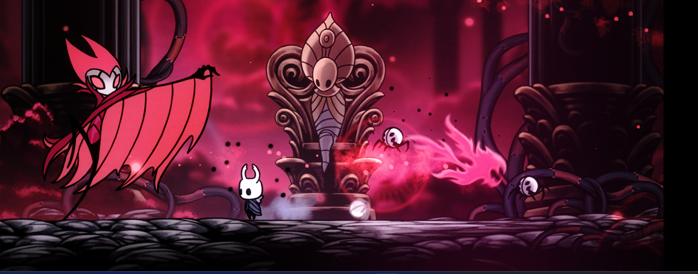
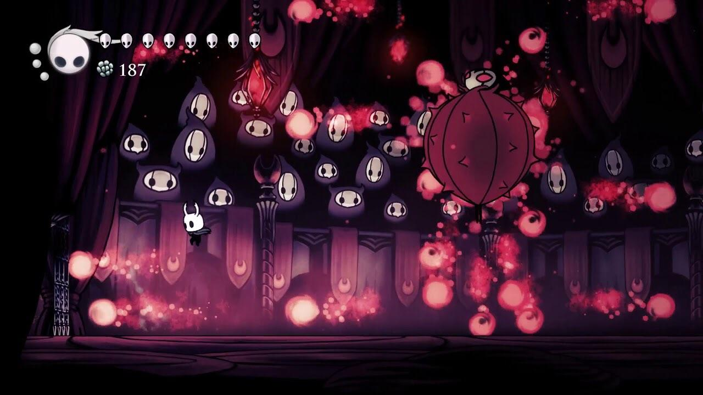
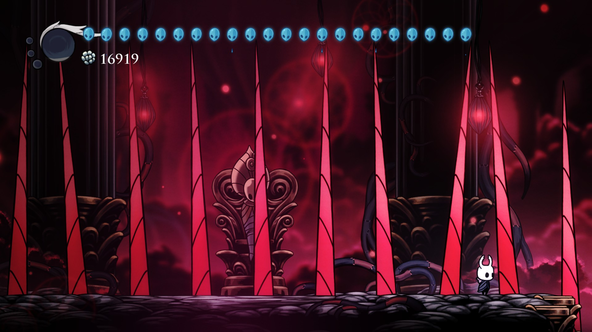

FIRE BATS
He sends out four fire bats (one shown below) toward the player that alternate between high and low.
You can avoid this by jumping over the low fire bats and staying on the ground for the high ones. This move leaves him open to 1-2 hits.
PUFFERFISH
This attack occurs when Grimm's health reaches 75%, 50%, and 25%. This is a good visual representation of how close to death Grimm is. In this state, he is invulnerable and also shoots fireballs all over the stage.
The only way to avoid this attack is to jump or go under the fireballs as they fly toward you. It is recommended that you go close to the side wall of the stage to give you more time to dodge the fireballs.
FLOOR SPIKES
Spikes come up from the ground whenever Grimm sends his cloak in the ground.
You can avoid this attack by observing when Grimm puts his cloak in the ground and where the little spikes come up before the big ones. Simply move to the area in between the spikes to be safe.
Final Tips
- Practice his moves in the Pantheon or Hall of Gods
- Don't try to heal recklessly
- Focus on dodging first. Damage comes second
- Use Abyss Shriek when he's stunned or right next to you
- Don't panic